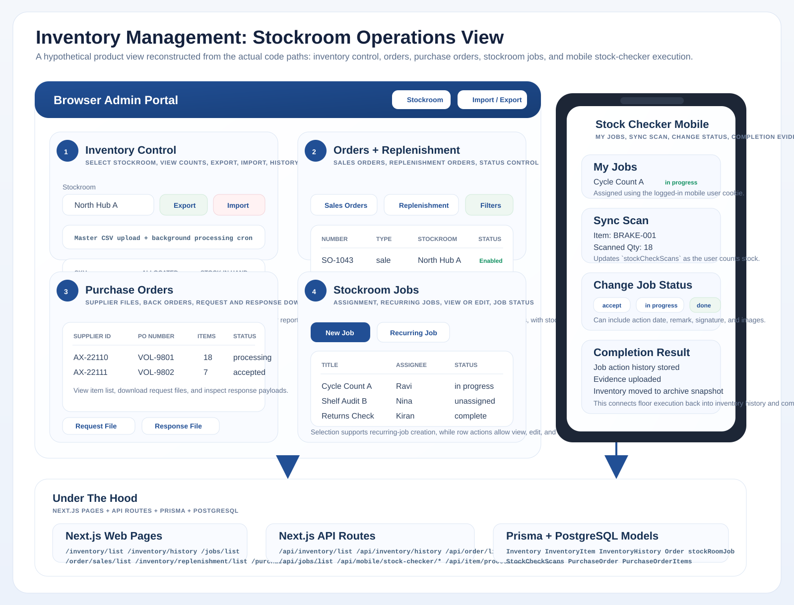

Visual Overview

Reference visual of the stockroom operations flow connecting inventory, orders, jobs, and replenishment.
Independent Project
Inventory Management was a full-stack stockroom operations platform built with Next.js, Prisma, and PostgreSQL.

Reference visual of the stockroom operations flow connecting inventory, orders, jobs, and replenishment.
This is stronger than a generic inventory app. The system connected stock, orders, purchase orders, jobs, and mobile stock-checker execution into one operational workflow.
This project is independent from iCargo and is positioned as a separate full-stack operations product.